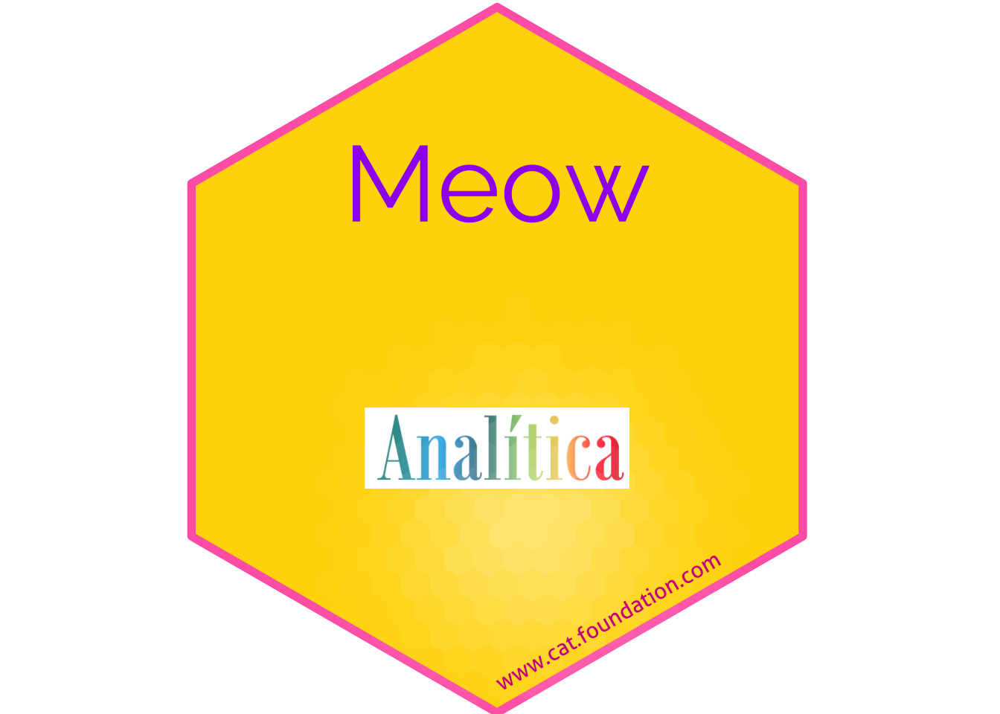

Capítulo24 Hex Stickers
## [1] "2025-09-28"24.1 La función y los valores “default”
sticker(
subplot,
s_x = 0.8,
s_y = 0.75,
s_width = 0.4,
s_height = 0.5,
package,
p_x = 1,
p_y = 1.4,
p_color = "#FFFFFF",
p_family = "Aller_Rg",
p_fontface = "plain",
p_size = 8,
h_size = 1.2,
h_fill = "#1881C2",
h_color = "#87B13F",
spotlight = FALSE,
l_x = 1,
l_y = 0.5,
l_width = 3,
l_height = 3,
l_alpha = 0.4,
url = "",
u_x = 1,
u_y = 0.08,
u_color = "black",
u_family = "Aller_Rg",
u_size = 1.5,
u_angle = 30,
white_around_sticker = FALSE,
...,
filename = paste0(package, ".png"),
asp = 1,
dpi = 300
)Arguments
| Función | Descripción |
|---|---|
| subplot | subplot |
| s_x | x position for subplot |
| s_y | y position for subplot |
| s_width | width for subplot |
| s_height | height for subplot |
| package | package name |
| p_x | x position for package name |
| p_y | y position for package name |
| p_color | color for package name |
| p_family | font family for package name |
| p_fontface | fontface for package name |
| p_size | font size for package name |
| h_size | size for hexagon border |
| h_fill | color to fill hexagon |
| h_color | color for hexagon border |
| spotlight | whether add spotlight |
| l_x | x position for spotlight |
| l_y | y position for spotlight |
| l_width | width for spotlight |
| l_height | height for spotlight |
| l_alpha | maximum alpha for spotlight |
| url | url at lower border |
| u_x | x position for url |
| u_y | y position for url |
| u_color | color for url |
| u_family | font family for url |
| u_size | text size for url |
| u_angle | angle for url |
| white_around_sticker | default to FALSE. If set to TRUE, it puts white triangles in the corners |
| ... | additional parameter to geom_pkgname |
| filename | filename to save sticker |
| asp | aspect ratio, only works if subplot is an image file |
| dpi | plot resolution |
Other Details, - The extension given in filename determines the graphics device that is used to render the sticker, e.g. filename = ‘sticker.png’ creates a png file and filename = ‘sticker.svg’ creates a svg file. For a list of supported graphics devices please see the documentation of ggplot2::ggsave()
sysfonts::font_add_google(“Sixtyfour Convergence”) sysfonts::font_add_google(“Rubik”) sysfonts::font_add_google(“Young Serif”) ## No baja
24.2 Ejemplo de Crear un Hex con un gatito
## path
## 1 /Library/Fonts
## 2 /System/Library/Fonts
## 3 /System/Library/Fonts
## 4 /System/Library/Fonts
## 5 /System/Library/Fonts
## 6 /System/Library/Fonts
## 7 /System/Library/Fonts
## 8 /System/Library/Fonts
## 9 /System/Library/Fonts
## 10 /System/Library/Fonts
## 11 /System/Library/Fonts
## 12 /System/Library/Fonts
## 13 /System/Library/Fonts
## 14 /System/Library/Fonts
## 15 /System/Library/Fonts
## 16 /System/Library/Fonts
## 17 /System/Library/Fonts
## 18 /System/Library/Fonts
## 19 /System/Library/Fonts
## 20 /System/Library/Fonts
## 21 /System/Library/Fonts
## 22 /System/Library/Fonts
## 23 /System/Library/Fonts
## 24 /System/Library/Fonts
## 25 /System/Library/Fonts
## 26 /System/Library/Fonts
## 27 /System/Library/Fonts
## 28 /System/Library/Fonts
## 29 /System/Library/Fonts
## 30 /System/Library/Fonts
## 31 /System/Library/Fonts
## 32 /System/Library/Fonts
## 33 /System/Library/Fonts
## 34 /System/Library/Fonts
## 35 /System/Library/Fonts
## 36 /System/Library/Fonts
## 37 /System/Library/Fonts
## 38 /System/Library/Fonts
## 39 /System/Library/Fonts
## 40 /System/Library/Fonts
## 41 /System/Library/Fonts
## 42 /System/Library/Fonts
## 43 /System/Library/Fonts
## 44 /System/Library/Fonts
## 45 /System/Library/Fonts
## 46 /System/Library/Fonts
## 47 /System/Library/Fonts
## 48 /System/Library/Fonts
## 49 /System/Library/Fonts
## 50 /System/Library/Fonts
## 51 /System/Library/Fonts
## 52 /System/Library/Fonts
## 53 /System/Library/Fonts
## 54 /System/Library/Fonts
## 55 /System/Library/Fonts
## 56 /System/Library/Fonts
## 57 /System/Library/Fonts
## 58 /System/Library/Fonts
## 59 /System/Library/Fonts
## 60 /System/Library/Fonts
## 61 /System/Library/Fonts
## 62 /System/Library/Fonts
## 63 /System/Library/Fonts
## 64 /System/Library/Fonts
## 65 /System/Library/Fonts
## 66 /System/Library/Fonts/Supplemental
## 67 /System/Library/Fonts/Supplemental
## 68 /System/Library/Fonts/Supplemental
## 69 /System/Library/Fonts/Supplemental
## 70 /System/Library/Fonts/Supplemental
## 71 /System/Library/Fonts/Supplemental
## 72 /System/Library/Fonts/Supplemental
## 73 /System/Library/Fonts/Supplemental
## 74 /System/Library/Fonts/Supplemental
## 75 /System/Library/Fonts/Supplemental
## 76 /System/Library/Fonts/Supplemental
## 77 /System/Library/Fonts/Supplemental
## 78 /System/Library/Fonts/Supplemental
## 79 /System/Library/Fonts/Supplemental
## 80 /System/Library/Fonts/Supplemental
## 81 /System/Library/Fonts/Supplemental
## 82 /System/Library/Fonts/Supplemental
## 83 /System/Library/Fonts/Supplemental
## 84 /System/Library/Fonts/Supplemental
## 85 /System/Library/Fonts/Supplemental
## 86 /System/Library/Fonts/Supplemental
## 87 /System/Library/Fonts/Supplemental
## 88 /System/Library/Fonts/Supplemental
## 89 /System/Library/Fonts/Supplemental
## 90 /System/Library/Fonts/Supplemental
## 91 /System/Library/Fonts/Supplemental
## 92 /System/Library/Fonts/Supplemental
## 93 /System/Library/Fonts/Supplemental
## 94 /System/Library/Fonts/Supplemental
## 95 /System/Library/Fonts/Supplemental
## 96 /System/Library/Fonts/Supplemental
## 97 /System/Library/Fonts/Supplemental
## 98 /System/Library/Fonts/Supplemental
## 99 /System/Library/Fonts/Supplemental
## 100 /System/Library/Fonts/Supplemental
## 101 /System/Library/Fonts/Supplemental
## 102 /System/Library/Fonts/Supplemental
## 103 /System/Library/Fonts/Supplemental
## 104 /System/Library/Fonts/Supplemental
## 105 /System/Library/Fonts/Supplemental
## 106 /System/Library/Fonts/Supplemental
## 107 /System/Library/Fonts/Supplemental
## 108 /System/Library/Fonts/Supplemental
## 109 /System/Library/Fonts/Supplemental
## 110 /System/Library/Fonts/Supplemental
## 111 /System/Library/Fonts/Supplemental
## 112 /System/Library/Fonts/Supplemental
## 113 /System/Library/Fonts/Supplemental
## 114 /System/Library/Fonts/Supplemental
## 115 /System/Library/Fonts/Supplemental
## 116 /System/Library/Fonts/Supplemental
## 117 /System/Library/Fonts/Supplemental
## 118 /System/Library/Fonts/Supplemental
## 119 /System/Library/Fonts/Supplemental
## 120 /System/Library/Fonts/Supplemental
## 121 /System/Library/Fonts/Supplemental
## 122 /System/Library/Fonts/Supplemental
## 123 /System/Library/Fonts/Supplemental
## 124 /System/Library/Fonts/Supplemental
## 125 /System/Library/Fonts/Supplemental
## 126 /System/Library/Fonts/Supplemental
## 127 /System/Library/Fonts/Supplemental
## 128 /System/Library/Fonts/Supplemental
## 129 /System/Library/Fonts/Supplemental
## 130 /System/Library/Fonts/Supplemental
## 131 /System/Library/Fonts/Supplemental
## 132 /System/Library/Fonts/Supplemental
## 133 /System/Library/Fonts/Supplemental
## 134 /System/Library/Fonts/Supplemental
## 135 /System/Library/Fonts/Supplemental
## 136 /System/Library/Fonts/Supplemental
## 137 /System/Library/Fonts/Supplemental
## 138 /System/Library/Fonts/Supplemental
## 139 /System/Library/Fonts/Supplemental
## 140 /System/Library/Fonts/Supplemental
## 141 /System/Library/Fonts/Supplemental
## 142 /System/Library/Fonts/Supplemental
## 143 /System/Library/Fonts/Supplemental
## 144 /System/Library/Fonts/Supplemental
## 145 /System/Library/Fonts/Supplemental
## 146 /System/Library/Fonts/Supplemental
## 147 /System/Library/Fonts/Supplemental
## 148 /System/Library/Fonts/Supplemental
## 149 /System/Library/Fonts/Supplemental
## 150 /System/Library/Fonts/Supplemental
## 151 /System/Library/Fonts/Supplemental
## 152 /System/Library/Fonts/Supplemental
## 153 /System/Library/Fonts/Supplemental
## 154 /System/Library/Fonts/Supplemental
## 155 /System/Library/Fonts/Supplemental
## 156 /System/Library/Fonts/Supplemental
## 157 /System/Library/Fonts/Supplemental
## 158 /System/Library/Fonts/Supplemental
## 159 /System/Library/Fonts/Supplemental
## 160 /System/Library/Fonts/Supplemental
## 161 /System/Library/Fonts/Supplemental
## 162 /System/Library/Fonts/Supplemental
## 163 /System/Library/Fonts/Supplemental
## 164 /System/Library/Fonts/Supplemental
## 165 /System/Library/Fonts/Supplemental
## 166 /System/Library/Fonts/Supplemental
## 167 /System/Library/Fonts/Supplemental
## 168 /System/Library/Fonts/Supplemental
## 169 /System/Library/Fonts/Supplemental
## 170 /System/Library/Fonts/Supplemental
## 171 /System/Library/Fonts/Supplemental
## 172 /System/Library/Fonts/Supplemental
## 173 /System/Library/Fonts/Supplemental
## 174 /System/Library/Fonts/Supplemental
## 175 /System/Library/Fonts/Supplemental
## 176 /System/Library/Fonts/Supplemental
## 177 /System/Library/Fonts/Supplemental
## 178 /System/Library/Fonts/Supplemental
## 179 /System/Library/Fonts/Supplemental
## 180 /System/Library/Fonts/Supplemental
## 181 /System/Library/Fonts/Supplemental
## 182 /System/Library/Fonts/Supplemental
## 183 /System/Library/Fonts/Supplemental
## 184 /System/Library/Fonts/Supplemental
## 185 /System/Library/Fonts/Supplemental
## 186 /System/Library/Fonts/Supplemental
## 187 /System/Library/Fonts/Supplemental
## 188 /System/Library/Fonts/Supplemental
## 189 /System/Library/Fonts/Supplemental
## 190 /System/Library/Fonts/Supplemental
## 191 /System/Library/Fonts/Supplemental
## 192 /System/Library/Fonts/Supplemental
## 193 /System/Library/Fonts/Supplemental
## 194 /System/Library/Fonts/Supplemental
## 195 /System/Library/Fonts/Supplemental
## 196 /System/Library/Fonts/Supplemental
## 197 /System/Library/Fonts/Supplemental
## 198 /System/Library/Fonts/Supplemental
## 199 /System/Library/Fonts/Supplemental
## 200 /System/Library/Fonts/Supplemental
## 201 /System/Library/Fonts/Supplemental
## 202 /System/Library/Fonts/Supplemental
## 203 /System/Library/Fonts/Supplemental
## 204 /System/Library/Fonts/Supplemental
## 205 /System/Library/Fonts/Supplemental
## 206 /System/Library/Fonts/Supplemental
## 207 /System/Library/Fonts/Supplemental
## 208 /System/Library/Fonts/Supplemental
## 209 /System/Library/Fonts/Supplemental
## 210 /System/Library/Fonts/Supplemental
## 211 /System/Library/Fonts/Supplemental
## 212 /System/Library/Fonts/Supplemental
## 213 /System/Library/Fonts/Supplemental
## 214 /System/Library/Fonts/Supplemental
## 215 /System/Library/Fonts/Supplemental
## 216 /System/Library/Fonts/Supplemental
## 217 /System/Library/Fonts/Supplemental
## 218 /System/Library/Fonts/Supplemental
## 219 /System/Library/Fonts/Supplemental
## 220 /System/Library/Fonts/Supplemental
## 221 /System/Library/Fonts/Supplemental
## 222 /System/Library/Fonts/Supplemental
## 223 /System/Library/Fonts/Supplemental
## 224 /System/Library/Fonts/Supplemental
## 225 /System/Library/Fonts/Supplemental
## 226 /System/Library/Fonts/Supplemental
## 227 /System/Library/Fonts/Supplemental
## 228 /System/Library/Fonts/Supplemental
## 229 /System/Library/Fonts/Supplemental
## 230 /System/Library/Fonts/Supplemental
## 231 /System/Library/Fonts/Supplemental
## 232 /System/Library/Fonts/Supplemental
## 233 /System/Library/Fonts/Supplemental
## 234 /System/Library/Fonts/Supplemental
## 235 /System/Library/Fonts/Supplemental
## 236 /System/Library/Fonts/Supplemental
## 237 /System/Library/Fonts/Supplemental
## 238 /System/Library/Fonts/Supplemental
## 239 /System/Library/Fonts/Supplemental
## 240 /System/Library/Fonts/Supplemental
## 241 /System/Library/Fonts/Supplemental
## 242 /System/Library/Fonts/Supplemental
## 243 /System/Library/Fonts/Supplemental
## 244 /System/Library/Fonts/Supplemental
## 245 /System/Library/Fonts/Supplemental
## 246 /System/Library/Fonts/Supplemental
## 247 /System/Library/Fonts/Supplemental
## 248 /System/Library/Fonts/Supplemental
## 249 /System/Library/Fonts/Supplemental
## 250 /System/Library/Fonts/Supplemental
## 251 /System/Library/Fonts/Supplemental
## 252 /System/Library/Fonts/Supplemental
## 253 /System/Library/Fonts/Supplemental
## 254 /System/Library/Fonts/Supplemental
## 255 /System/Library/Fonts/Supplemental
## 256 /System/Library/Fonts/Supplemental
## 257 /System/Library/Fonts/Supplemental
## 258 /System/Library/Fonts/Supplemental
## 259 /System/Library/Fonts/Supplemental
## 260 /System/Library/Fonts/Supplemental
## 261 /System/Library/Fonts/Supplemental
## 262 /System/Library/Fonts/Supplemental
## 263 /System/Library/Fonts/Supplemental
## 264 /System/Library/Fonts/Supplemental
## 265 /System/Library/Fonts/Supplemental
## 266 /System/Library/Fonts/Supplemental
## 267 /System/Library/Fonts/Supplemental
## 268 /System/Library/Fonts/Supplemental
## 269 /System/Library/Fonts/Supplemental
## 270 /System/Library/Fonts/Supplemental
## 271 /System/Library/Fonts/Supplemental
## 272 /System/Library/Fonts/Supplemental
## 273 /System/Library/Fonts/Supplemental
## 274 /System/Library/Fonts/Supplemental
## 275 /System/Library/Fonts/Supplemental
## 276 /System/Library/Fonts/Supplemental
## 277 /System/Library/Fonts/Supplemental
## 278 /System/Library/Fonts/Supplemental
## 279 /System/Library/Fonts/Supplemental
## 280 /System/Library/Fonts/Supplemental
## 281 /System/Library/Fonts/Supplemental
## 282 /System/Library/Fonts/Supplemental
## 283 /System/Library/Fonts/Supplemental
## 284 /System/Library/Fonts/Supplemental
## 285 /System/Library/Fonts/Supplemental
## 286 /System/Library/Fonts/Supplemental
## 287 /System/Library/Fonts/Supplemental
## 288 /System/Library/Fonts/Supplemental
## 289 /System/Library/Fonts/Supplemental
## 290 /System/Library/Fonts/Supplemental
## 291 /System/Library/Fonts/Supplemental
## 292 /System/Library/Fonts/Supplemental
## 293 /System/Library/Fonts/Supplemental
## 294 /System/Library/Fonts/Supplemental
## 295 /System/Library/Fonts/Supplemental
## 296 /System/Library/Fonts/Supplemental
## 297 /System/Library/Fonts/Supplemental
## 298 /System/Library/Fonts/Supplemental
## 299 /System/Library/Fonts/Supplemental
## 300 /System/Library/Fonts/Supplemental
## 301 /System/Library/Fonts/Supplemental
## 302 /System/Library/Fonts/Supplemental
## 303 /System/Library/Fonts/Supplemental
## 304 /System/Library/Fonts/Supplemental
## 305 /System/Library/Fonts/Supplemental
## 306 /System/Library/Fonts/Supplemental
## 307 /System/Library/Fonts/Supplemental
## 308 /System/Library/Fonts/Supplemental
## 309 /System/Library/Fonts/Supplemental
## 310 /System/Library/Fonts/Supplemental
## 311 /System/Library/Fonts/Supplemental
## 312 /System/Library/Fonts/Supplemental
## 313 /System/Library/Fonts/Supplemental
## 314 /System/Library/Fonts/Supplemental
## 315 /System/Library/Fonts/Supplemental
## 316 /System/Library/Fonts/Supplemental
## 317 /System/Library/Fonts/Supplemental
## 318 /System/Library/Fonts/Supplemental
## 319 /System/Library/Fonts/Supplemental
## 320 /System/Library/Fonts/Supplemental
## 321 /System/Library/Fonts/Supplemental
## 322 /System/Library/Fonts/Supplemental
## 323 /System/Library/Fonts/Supplemental
## 324 /System/Library/Fonts/Supplemental
## 325 /System/Library/Fonts/Supplemental
## 326 /System/Library/Fonts/Supplemental
## 327 /System/Library/Fonts/Supplemental
## 328 /System/Library/Fonts/Supplemental
## 329 /System/Library/Fonts/Supplemental
## 330 /System/Library/Fonts/Supplemental
## 331 /System/Library/Fonts/Supplemental
## 332 /System/Library/Fonts/Supplemental
## 333 /System/Library/Fonts/Supplemental
## 334 /System/Library/Fonts/Supplemental
## 335 /System/Library/Fonts/Supplemental
## 336 /System/Library/Fonts/Supplemental
## 337 /System/Library/Fonts/Supplemental
## 338 /System/Library/Fonts/Supplemental
## 339 /System/Library/Fonts/Supplemental
## 340 /System/Library/Fonts/Supplemental
## 341 /System/Library/Fonts/Supplemental
## 342 /System/Library/Fonts/Supplemental
## 343 /System/Library/Fonts/Supplemental
## 344 /System/Library/Fonts/Supplemental
## 345 /System/Library/Fonts/Supplemental
## 346 /System/Library/Fonts/Supplemental
## 347 /System/Library/Fonts/Supplemental
## 348 /System/Library/Fonts/Supplemental
## 349 /System/Library/Fonts/Supplemental
## 350 /System/Library/Fonts/Supplemental
## 351 /System/Library/Fonts/Supplemental
## 352 /System/Library/Fonts/Supplemental
## 353 /System/Library/Fonts/Supplemental
## 354 /System/Library/Fonts/Supplemental
## 355 /System/Library/Fonts/Supplemental
## 356 /System/Library/Fonts
## 357 /System/Library/Fonts
## 358 /System/Library/Fonts
## 359 /System/Library/Fonts
## 360 /System/Library/Fonts
## 361 /System/Library/Fonts
## 362 /System/Library/Fonts
## 363 /System/Library/Fonts
## 364 /System/Library/Fonts
## 365 /System/Library/Fonts
## 366 /System/Library/Fonts
## 367 /System/Library/Fonts
## 368 /System/Library/Fonts
## 369 /System/Library/Fonts
## 370 /System/Library/Fonts
## 371 /System/Library/Fonts
## file family
## 1 Arial Unicode.ttf Arial Unicode MS
## 2 ADTNumeric.ttc .SF Numeric
## 3 Apple Braille Outline 6 Dot.ttf Apple Braille
## 4 Apple Braille Outline 8 Dot.ttf Apple Braille
## 5 Apple Braille Pinpoint 6 Dot.ttf Apple Braille
## 6 Apple Braille Pinpoint 8 Dot.ttf Apple Braille
## 7 Apple Braille.ttf Apple Braille
## 8 Apple Color Emoji.ttc Apple Color Emoji
## 9 Apple Symbols.ttf Apple Symbols
## 10 AppleSDGothicNeo.ttc Apple SD Gothic Neo
## 11 AquaKana.ttc .Aqua Kana
## 12 ArialHB.ttc Arial Hebrew
## 13 Avenir Next Condensed.ttc Avenir Next Condensed
## 14 Avenir Next.ttc Avenir Next
## 15 Avenir.ttc Avenir Book
## 16 CJKSymbolsFallback.ttc .CJK Symbols Fallback HK
## 17 Courier.ttc Courier
## 18 DecoTypeNastaleeqUrdu.ttc .DecoType Nastaleeq Urdu UI
## 19 GeezaPro.ttc Geeza Pro
## 20 Geneva.ttf Geneva
## 21 Helvetica.ttc Helvetica
## 22 HelveticaNeue.ttc Helvetica Neue
## 23 Hiragino Sans GB.ttc Hiragino Sans GB W3
## 24 Keyboard.ttf .Keyboard
## 25 Kohinoor.ttc Kohinoor Devanagari
## 26 KohinoorBangla.ttc Kohinoor Bangla
## 27 KohinoorGujarati.ttc Kohinoor Gujarati
## 28 KohinoorTelugu.ttc Kohinoor Telugu
## 29 LastResort.otf .LastResort
## 30 LucidaGrande.ttc Lucida Grande
## 31 MarkerFelt.ttc Marker Felt
## 32 Menlo.ttc Menlo
## 33 Monaco.ttf Monaco
## 34 MuktaMahee.ttc MuktaMahee Regular
## 35 NewYork.ttf .New York
## 36 NewYorkItalic.ttf .New York
## 37 Noteworthy.ttc Noteworthy
## 38 NotoNastaliq.ttc Noto Nastaliq Urdu
## 39 NotoSansArmenian.ttc Noto Sans Armenian Blk
## 40 NotoSansKannada.ttc Noto Sans Kannada Thin
## 41 NotoSansMyanmar.ttc Noto Sans Myanmar Blk
## 42 NotoSansOriya.ttc Noto Sans Oriya
## 43 NotoSerifMyanmar.ttc Noto Serif Myanmar Blk
## 44 Optima.ttc Optima
## 45 Palatino.ttc Palatino
## 46 SFArabic.ttf .SF Arabic
## 47 SFArabicRounded.ttf .SF Arabic Rounded
## 48 SFArmenian.ttf .SF Armenian
## 49 SFArmenianRounded.ttf .SF Armenian Rounded
## 50 SFCamera.ttf .SF Camera
## 51 SFCompact.ttf .SF Compact
## 52 SFCompactItalic.ttf .SF Compact
## 53 SFCompactRounded.ttf .SF Compact Rounded
## 54 SFGeorgian.ttf .SF Georgian
## 55 SFGeorgianRounded.ttf .SF Georgian Rounded
## 56 SFHebrew.ttf .SF Hebrew
## 57 SFHebrewRounded.ttf .SF Hebrew Rounded
## 58 SFIndia.ttc .SF Bangla
## 59 SFNS.ttf System Font
## 60 SFNSItalic.ttf System Font
## 61 SFNSMono.ttf .SF NS Mono
## 62 SFNSMonoItalic.ttf .SF NS Mono
## 63 SFNSRounded.ttf .SF NS Rounded
## 64 STHeiti Light.ttc Heiti TC
## 65 STHeiti Medium.ttc Heiti TC
## 66 Academy Engraved LET Fonts.ttf Academy Engraved LET
## 67 Al Nile.ttc Al Nile
## 68 Al Tarikh.ttc Al Tarikh
## 69 AlBayan.ttc Al Bayan
## 70 AmericanTypewriter.ttc American Typewriter
## 71 Andale Mono.ttf Andale Mono
## 72 Apple Chancery.ttf Apple Chancery
## 73 AppleGothic.ttf AppleGothic
## 74 AppleMyungjo.ttf AppleMyungjo
## 75 Arial Black.ttf Arial Black
## 76 Arial Bold Italic.ttf Arial
## 77 Arial Bold.ttf Arial
## 78 Arial Italic.ttf Arial
## 79 Arial Narrow Bold Italic.ttf Arial Narrow
## 80 Arial Narrow Bold.ttf Arial Narrow
## 81 Arial Narrow Italic.ttf Arial Narrow
## 82 Arial Narrow.ttf Arial Narrow
## 83 Arial Rounded Bold.ttf Arial Rounded MT Bold
## 84 Arial Unicode.ttf Arial Unicode MS
## 85 Arial.ttf Arial
## 86 Athelas.ttc Athelas
## 87 Ayuthaya.ttf Ayuthaya
## 88 Baghdad.ttc Baghdad
## 89 Bangla MN.ttc Bangla MN
## 90 Bangla Sangam MN.ttc Bangla Sangam MN
## 91 Baskerville.ttc Baskerville
## 92 Beirut.ttc Beirut
## 93 BigCaslon.ttf Big Caslon
## 94 Bodoni 72 OS.ttc Bodoni 72 Oldstyle
## 95 Bodoni 72 Smallcaps Book.ttf Bodoni 72 Smallcaps
## 96 Bodoni 72.ttc Bodoni 72
## 97 Bodoni Ornaments.ttf Bodoni Ornaments
## 98 Bradley Hand Bold.ttf Bradley Hand
## 99 Brush Script.ttf Brush Script MT
## 100 Chalkboard.ttc Chalkboard
## 101 ChalkboardSE.ttc Chalkboard SE
## 102 Chalkduster.ttf Chalkduster
## 103 Charter.ttc Charter
## 104 Cochin.ttc Cochin
## 105 Comic Sans MS Bold.ttf Comic Sans MS
## 106 Comic Sans MS.ttf Comic Sans MS
## 107 Copperplate.ttc Copperplate
## 108 Corsiva.ttc Corsiva Hebrew
## 109 Courier New Bold Italic.ttf Courier New
## 110 Courier New Bold.ttf Courier New
## 111 Courier New Italic.ttf Courier New
## 112 Courier New.ttf Courier New
## 113 Damascus.ttc Damascus
## 114 DecoTypeNaskh.ttc DecoType Naskh
## 115 Devanagari Sangam MN.ttc Devanagari Sangam MN
## 116 DevanagariMT.ttc Devanagari MT
## 117 Didot.ttc Didot
## 118 DIN Alternate Bold.ttf DIN Alternate
## 119 DIN Condensed Bold.ttf DIN Condensed
## 120 Diwan Kufi.ttc Diwan Kufi
## 121 Diwan Thuluth.ttf Diwan Thuluth
## 122 EuphemiaCAS.ttc Euphemia UCAS
## 123 Farah.ttc Farah
## 124 Farisi.ttf Farisi
## 125 Futura.ttc Futura
## 126 Galvji.ttc Galvji
## 127 Georgia Bold Italic.ttf Georgia
## 128 Georgia Bold.ttf Georgia
## 129 Georgia Italic.ttf Georgia
## 130 Georgia.ttf Georgia
## 131 GillSans.ttc Gill Sans
## 132 Gujarati Sangam MN.ttc Gujarati Sangam MN
## 133 GujaratiMT.ttc Gujarati MT
## 134 Gurmukhi MN.ttc Gurmukhi MN
## 135 Gurmukhi Sangam MN.ttc Gurmukhi Sangam MN
## 136 Gurmukhi.ttf Gurmukhi MT
## 137 Herculanum.ttf Herculanum
## 138 Hoefler Text Ornaments.ttf Hoefler Text Ornaments
## 139 Hoefler Text.ttc Hoefler Text
## 140 Impact.ttf Impact
## 141 InaiMathi-MN.ttc InaiMathi
## 142 Iowan Old Style.ttc Iowan Old Style
## 143 ITFDevanagari.ttc ITF Devanagari
## 144 Kailasa.ttc Kailasa
## 145 Kannada MN.ttc Kannada MN
## 146 Kannada Sangam MN.ttc Kannada Sangam MN
## 147 KefaIII.ttf Kefa III
## 148 Khmer MN.ttc Khmer MN
## 149 Khmer Sangam MN.ttf Khmer Sangam MN
## 150 Kokonor.ttf Kokonor
## 151 Krungthep.ttf Krungthep
## 152 KufiStandardGK.ttc KufiStandardGK
## 153 Lao MN.ttc Lao MN
## 154 Lao Sangam MN.ttf Lao Sangam MN
## 155 Luminari.ttf Luminari
## 156 Malayalam MN.ttc Malayalam MN
## 157 Malayalam Sangam MN.ttc Malayalam Sangam MN
## 158 Marion.ttc Marion
## 159 Microsoft Sans Serif.ttf Microsoft Sans Serif
## 160 Mishafi Gold.ttf Mishafi Gold
## 161 Mishafi.ttf Mishafi
## 162 Mshtakan.ttc Mshtakan
## 163 Muna.ttc Muna
## 164 Myanmar MN.ttc Myanmar MN
## 165 Myanmar Sangam MN.ttc Myanmar Sangam MN
## 166 Nadeem.ttc Nadeem
## 167 NewPeninimMT.ttc New Peninim MT
## 168 NISC18030.ttf GB18030 Bitmap
## 169 NotoSansAdlam-Regular.ttf Noto Sans Adlam
## 170 NotoSansAvestan-Regular.ttf Noto Sans Avestan
## 171 NotoSansBamum-Regular.ttf Noto Sans Bamum
## 172 NotoSansBassaVah-Regular.ttf Noto Sans Bassa Vah
## 173 NotoSansBatak-Regular.ttf Noto Sans Batak
## 174 NotoSansBhaiksuki-Regular.ttf Noto Sans Bhaiksuki
## 175 NotoSansBrahmi-Regular.ttf Noto Sans Brahmi
## 176 NotoSansBuginese-Regular.ttf Noto Sans Buginese
## 177 NotoSansBuhid-Regular.ttf Noto Sans Buhid
## 178 NotoSansCanadianAboriginal-Regular.otf Noto Sans CanAborig
## 179 NotoSansCarian-Regular.ttf Noto Sans Carian
## 180 NotoSansCaucasianAlbanian-Regular.ttf Noto Sans CaucAlban
## 181 NotoSansChakma-Regular.ttf Noto Sans Chakma
## 182 NotoSansCham-Regular.ttf Noto Sans Cham
## 183 NotoSansCoptic-Regular.ttf Noto Sans Coptic
## 184 NotoSansCuneiform-Regular.ttf Noto Sans Cuneiform
## 185 NotoSansCypriot-Regular.ttf Noto Sans Cypriot
## 186 NotoSansDuployan-Regular.ttf Noto Sans Duployan
## 187 NotoSansEgyptianHieroglyphs-Regular.ttf Noto Sans EgyptHiero
## 188 NotoSansElbasan-Regular.ttf Noto Sans Elbasan
## 189 NotoSansGlagolitic-Regular.ttf Noto Sans Glagolitic
## 190 NotoSansGothic-Regular.ttf Noto Sans Gothic
## 191 NotoSansGunjalaGondi-Regular.otf Noto Sans Gunjala Gondi
## 192 NotoSansHanifiRohingya-Regular.ttf Noto Sans HanifiRohg
## 193 NotoSansHanunoo-Regular.ttf Noto Sans Hanunoo
## 194 NotoSansHatran-Regular.ttf Noto Sans Hatran
## 195 NotoSansImperialAramaic-Regular.ttf Noto Sans ImpAramaic
## 196 NotoSansInscriptionalPahlavi-Regular.ttf Noto Sans InsPahlavi
## 197 NotoSansInscriptionalParthian-Regular.ttf Noto Sans InsParthi
## 198 NotoSansJavanese-Regular.otf Noto Sans Javanese
## 199 NotoSansKaithi-Regular.ttf Noto Sans Kaithi
## 200 NotoSansKayahLi-Regular.ttf Noto Sans Kayah Li
## 201 NotoSansKharoshthi-Regular.ttf Noto Sans Kharoshthi
## 202 NotoSansKhojki-Regular.ttf Noto Sans Khojki
## 203 NotoSansKhudawadi-Regular.ttf Noto Sans Khudawadi
## 204 NotoSansLepcha-Regular.ttf Noto Sans Lepcha
## 205 NotoSansLimbu-Regular.ttf Noto Sans Limbu
## 206 NotoSansLinearA-Regular.ttf Noto Sans Linear A
## 207 NotoSansLinearB-Regular.ttf Noto Sans Linear B
## 208 NotoSansLisu-Regular.ttf Noto Sans Lisu
## 209 NotoSansLycian-Regular.ttf Noto Sans Lycian
## 210 NotoSansLydian-Regular.ttf Noto Sans Lydian
## 211 NotoSansMahajani-Regular.ttf Noto Sans Mahajani
## 212 NotoSansMandaic-Regular.ttf Noto Sans Mandaic
## 213 NotoSansManichaean-Regular.ttf Noto Sans Manichaean
## 214 NotoSansMarchen-Regular.ttf Noto Sans Marchen
## 215 NotoSansMasaramGondi-Regular.otf Noto Sans Masaram Gondi
## 216 NotoSansMeeteiMayek-Regular.ttf Noto Sans MeeteiMayek
## 217 NotoSansMendeKikakui-Regular.ttf Noto Sans Mende Kikakui
## 218 NotoSansMeroitic-Regular.ttf Noto Sans Meroitic
## 219 NotoSansMiao-Regular.ttf Noto Sans Miao
## 220 NotoSansModi-Regular.ttf Noto Sans Modi
## 221 NotoSansMongolian-Regular.ttf Noto Sans Mongolian
## 222 NotoSansMro-Regular.ttf Noto Sans Mro
## 223 NotoSansMultani-Regular.ttf Noto Sans Multani
## 224 NotoSansNabataean-Regular.ttf Noto Sans Nabataean
## 225 NotoSansNagMundari-Regular.ttf Noto Sans Nag Mundari
## 226 NotoSansNewa-Regular.ttf Noto Sans Newa
## 227 NotoSansNewTaiLue-Regular.ttf Noto Sans NewTaiLue
## 228 NotoSansNKo-Regular.ttf Noto Sans NKo
## 229 NotoSansOlChiki-Regular.ttf Noto Sans Ol Chiki
## 230 NotoSansOldHungarian-Regular.ttf Noto Sans OldHung
## 231 NotoSansOldItalic-Regular.ttf Noto Sans Old Italic
## 232 NotoSansOldNorthArabian-Regular.ttf Noto Sans OldNorArab
## 233 NotoSansOldPermic-Regular.ttf Noto Sans Old Permic
## 234 NotoSansOldPersian-Regular.ttf Noto Sans OldPersian
## 235 NotoSansOldSouthArabian-Regular.ttf Noto Sans OldSouArab
## 236 NotoSansOldTurkic-Regular.ttf Noto Sans Old Turkic
## 237 NotoSansOsage-Regular.ttf Noto Sans Osage
## 238 NotoSansOsmanya-Regular.ttf Noto Sans Osmanya
## 239 NotoSansPahawhHmong-Regular.ttf Noto Sans Pahawh Hmong
## 240 NotoSansPalmyrene-Regular.ttf Noto Sans Palmyrene
## 241 NotoSansPauCinHau-Regular.ttf Noto Sans PauCinHau
## 242 NotoSansPhagsPa-Regular.ttf Noto Sans PhagsPa
## 243 NotoSansPhoenician-Regular.ttf Noto Sans Phoenician
## 244 NotoSansPsalterPahlavi-Regular.ttf Noto Sans PsaPahlavi
## 245 NotoSansRejang-Regular.ttf Noto Sans Rejang
## 246 NotoSansSamaritan-Regular.ttf Noto Sans Samaritan
## 247 NotoSansSaurashtra-Regular.ttf Noto Sans Saurashtra
## 248 NotoSansSharada-Regular.ttf Noto Sans Sharada
## 249 NotoSansSiddham-Regular.otf Noto Sans Siddham
## 250 NotoSansSoraSompeng-Regular.ttf Noto Sans SoraSomp
## 251 NotoSansSundanese-Regular.ttf Noto Sans Sundanese
## 252 NotoSansSylotiNagri-Regular.ttf Noto Sans Syloti Nagri
## 253 NotoSansSyriac-Regular.ttf Noto Sans Syriac
## 254 NotoSansTagalog-Regular.ttf Noto Sans Tagalog
## 255 NotoSansTagbanwa-Regular.ttf Noto Sans Tagbanwa
## 256 NotoSansTaiLe-Regular.ttf Noto Sans Tai Le
## 257 NotoSansTaiTham-Regular.ttf Noto Sans Tai Tham
## 258 NotoSansTaiViet-Regular.ttf Noto Sans Tai Viet
## 259 NotoSansTakri-Regular.ttf Noto Sans Takri
## 260 NotoSansThaana-Regular.ttf Noto Sans Thaana
## 261 NotoSansTifinagh-Regular.otf Noto Sans Tifinagh
## 262 NotoSansTirhuta-Regular.ttf Noto Sans Tirhuta
## 263 NotoSansUgaritic-Regular.ttf Noto Sans Ugaritic
## 264 NotoSansVai-Regular.ttf Noto Sans Vai
## 265 NotoSansWancho-Regular.ttf Noto Sans Wancho
## 266 NotoSansWarangCiti-Regular.ttf Noto Sans WarangCiti
## 267 NotoSansYi-Regular.ttf Noto Sans Yi
## 268 NotoSerifAhom-Regular.ttf Noto Serif Ahom
## 269 NotoSerifBalinese-Regular.ttf Noto Serif Balinese
## 270 NotoSerifNyiakengPuachueHmong-Regular.ttf Noto Serif Hmong Nyiakeng
## 271 NotoSerifYezidi-Regular.otf Noto Serif Yezidi
## 272 Oriya MN.ttc Oriya MN
## 273 Oriya Sangam MN.ttc Oriya Sangam MN
## 274 Papyrus.ttc Papyrus
## 275 PartyLET-plain.ttf Party LET
## 276 Phosphate.ttc Phosphate
## 277 PlantagenetCherokee.ttf Plantagenet Cherokee
## 278 PTMono.ttc PT Mono
## 279 PTSans.ttc PT Sans
## 280 PTSerif.ttc PT Serif
## 281 PTSerifCaption.ttc PT Serif Caption
## 282 Raanana.ttc Raanana
## 283 Rockwell.ttc Rockwell
## 284 Sana.ttc Sana
## 285 Sathu.ttf Sathu
## 286 Savoye LET.ttc Savoye LET
## 287 Seravek.ttc Seravek
## 288 Shree714.ttc Shree Devanagari 714
## 289 SignPainter.ttc SignPainter-HouseScript
## 290 Silom.ttf Silom
## 291 Sinhala MN.ttc Sinhala MN
## 292 Sinhala Sangam MN.ttc Sinhala Sangam MN
## 293 Skia.ttf Skia
## 294 SnellRoundhand.ttc Snell Roundhand
## 295 Songti.ttc Songti SC
## 296 STIXGeneral.otf STIXGeneral
## 297 STIXGeneralBol.otf STIXGeneral
## 298 STIXGeneralBolIta.otf STIXGeneral
## 299 STIXGeneralItalic.otf STIXGeneral
## 300 STIXIntDBol.otf STIXIntegralsD
## 301 STIXIntDReg.otf STIXIntegralsD
## 302 STIXIntSmBol.otf STIXIntegralsSm
## 303 STIXIntSmReg.otf STIXIntegralsSm
## 304 STIXIntUpBol.otf STIXIntegralsUp
## 305 STIXIntUpDBol.otf STIXIntegralsUpD
## 306 STIXIntUpDReg.otf STIXIntegralsUpD
## 307 STIXIntUpReg.otf STIXIntegralsUp
## 308 STIXIntUpSmBol.otf STIXIntegralsUpSm
## 309 STIXIntUpSmReg.otf STIXIntegralsUpSm
## 310 STIXNonUni.otf STIXNonUnicode
## 311 STIXNonUniBol.otf STIXNonUnicode
## 312 STIXNonUniBolIta.otf STIXNonUnicode
## 313 STIXNonUniIta.otf STIXNonUnicode
## 314 STIXSizFiveSymReg.otf STIXSizeFiveSym
## 315 STIXSizFourSymBol.otf STIXSizeFourSym
## 316 STIXSizFourSymReg.otf STIXSizeFourSym
## 317 STIXSizOneSymBol.otf STIXSizeOneSym
## 318 STIXSizOneSymReg.otf STIXSizeOneSym
## 319 STIXSizThreeSymBol.otf STIXSizeThreeSym
## 320 STIXSizThreeSymReg.otf STIXSizeThreeSym
## 321 STIXSizTwoSymBol.otf STIXSizeTwoSym
## 322 STIXSizTwoSymReg.otf STIXSizeTwoSym
## 323 STIXTwoMath.otf STIX Two Math
## 324 STIXTwoText-Italic.ttf STIX Two Text
## 325 STIXTwoText.ttf STIX Two Text
## 326 STIXVar.otf STIXVariants
## 327 STIXVarBol.otf STIXVariants
## 328 SukhumvitSet.ttc Sukhumvit Set
## 329 SuperClarendon.ttc Superclarendon
## 330 Tahoma Bold.ttf Tahoma
## 331 Tahoma.ttf Tahoma
## 332 Tamil MN.ttc Tamil MN
## 333 Tamil Sangam MN.ttc Tamil Sangam MN
## 334 Telugu MN.ttc Telugu MN
## 335 Telugu Sangam MN.ttc Telugu Sangam MN
## 336 Thonburi.ttc Thonburi
## 337 Times New Roman Bold Italic.ttf Times New Roman
## 338 Times New Roman Bold.ttf Times New Roman
## 339 Times New Roman Italic.ttf Times New Roman
## 340 Times New Roman.ttf Times New Roman
## 341 Trattatello.ttf Trattatello
## 342 Trebuchet MS Bold Italic.ttf Trebuchet MS
## 343 Trebuchet MS Bold.ttf Trebuchet MS
## 344 Trebuchet MS Italic.ttf Trebuchet MS
## 345 Trebuchet MS.ttf Trebuchet MS
## 346 Verdana Bold Italic.ttf Verdana
## 347 Verdana Bold.ttf Verdana
## 348 Verdana Italic.ttf Verdana
## 349 Verdana.ttf Verdana
## 350 Waseem.ttc Waseem
## 351 Webdings.ttf Webdings
## 352 Wingdings 2.ttf Wingdings 2
## 353 Wingdings 3.ttf Wingdings 3
## 354 Wingdings.ttf Wingdings
## 355 Zapfino.ttf Zapfino
## 356 Symbol.ttf Symbol
## 357 ThonburiUI.ttc .ThonburiUI
## 358 Times.ttc Times
## 359 ZapfDingbats.ttf Zapf Dingbats
## 360 ヒラギノ丸ゴ ProN W4.ttc Hiragino Maru Gothic Pro W4
## 361 ヒラギノ明朝 ProN.ttc Hiragino Mincho ProN W3
## 362 ヒラギノ角ゴシック W0.ttc Hiragino Sans W0
## 363 ヒラギノ角ゴシック W1.ttc Hiragino Sans W1
## 364 ヒラギノ角ゴシック W2.ttc Hiragino Sans W2
## 365 ヒラギノ角ゴシック W3.ttc Hiragino Sans W3
## 366 ヒラギノ角ゴシック W4.ttc Hiragino Sans W4
## 367 ヒラギノ角ゴシック W5.ttc Hiragino Sans W5
## 368 ヒラギノ角ゴシック W6.ttc Hiragino Sans W6
## 369 ヒラギノ角ゴシック W7.ttc Hiragino Sans W7
## 370 ヒラギノ角ゴシック W8.ttc Hiragino Sans W8
## 371 ヒラギノ角ゴシック W9.ttc Hiragino Sans W9
## face version
## 1 Regular Version 1.01x
## 2 Regular Version 21.0d8e1
## 3 Outline 6 Dot 13.0d2e27
## 4 Outline 8 Dot 13.0d2e27
## 5 Pinpoint 6 Dot 13.0d2e27
## 6 Pinpoint 8 Dot 13.0d2e27
## 7 Regular 13.0d2e27
## 8 Regular 20.4d5e1
## 9 Regular 17.0d1e2
## 10 Regular 21.0d1e6
## 11 Regular 13.0d1e4
## 12 Regular 13.0d1e1
## 13 Bold 13.0d1e10
## 14 Bold 13.0d1e10
## 15 Regular 13.0d3e1
## 16 Regular 21.0d2e1
## 17 Regular 19.0d1e1
## 18 Regular 20.5d1e1
## 19 Regular 20.2d1e1
## 20 Regular 17.0d2e1
## 21 Regular 17.0d1e1
## 22 Regular 20.4d1e2
## 23 Regular 21.0d1e1
## 24 Regular 13.0d2e4
## 25 Regular 20.0d1e4
## 26 Regular 20.0d1e7
## 27 Bold 21.0d1e1
## 28 Regular 20.01d1e2
## 29 Regular 19.4d1e2
## 30 Regular 15.0d1e1
## 31 Thin 13.0d1e11
## 32 Regular 17.0d1e1
## 33 Regular 17.0d1e5
## 34 Regular 20.2d1e1
## 35 Regular 20.0d1e1
## 36 Regular Italic 17.0d5e1
## 37 Light 17.0d1e1
## 38 Regular 20.0d1e3
## 39 Regular 15.0d1e2
## 40 Regular 20.0d1e2
## 41 Regular 17.0d1e2
## 42 Regular 20.0d1e2
## 43 Regular 14.0d1e5
## 44 Regular 13.0d1e2
## 45 Regular 18.0d1e19
## 46 Regular 20.0d1e1
## 47 Regular 20.0d1e1
## 48 Regular 19.0d7e2
## 49 Regular 19.0d5e2
## 50 Regular 19.0d0e3
## 51 Black 21.0d3e1
## 52 Black Italic 21.0d3e1
## 53 Regular 21.0d1e1
## 54 Regular 19.0d6e2
## 55 Regular 19.0d4e2
## 56 Regular 19.2d1e1
## 57 Regular 19.2d1e1
## 58 Regular 21.0d2e1
## 59 Regular 21.0d2e1
## 60 Regular Italic 21.0d2e1
## 61 Light 21.0d1e1
## 62 Light Italic 21.0d1e1
## 63 Regular 21.0d2e1
## 64 Light 17.0d1e2
## 65 Medium 17.0d1e2
## 66 Plain 16.0d1e1
## 67 Regular 13.0d2e2
## 68 Regular 13.0d2e1
## 69 Plain 18.0d1e1
## 70 Regular 16.0d2e4
## 71 Regular Version 2.00x
## 72 Chancery 13.0d1e5
## 73 Regular 13.0d1e3
## 74 Regular 13.0d1e6
## 75 Regular Version 5.00.1x
## 76 Bold Italic Version 5.00.2x
## 77 Bold Version 5.01.2x
## 78 Italic Version 5.00.2x
## 79 Bold Italic Version 2.38.1x
## 80 Bold Version 2.38.1x
## 81 Italic Version 2.38.1x
## 82 Regular Version 2.38.1x
## 83 Regular Version 1.51x
## 84 Regular Version 1.01x
## 85 Regular Version 5.01.2x
## 86 Regular 13.0d1e3
## 87 Regular 13.0d1e7
## 88 Regular 13.0d1e5
## 89 Regular 20.0d1e2
## 90 Regular 20.0d1e2
## 91 Regular 13.0d1e10
## 92 Regular 13.0d1e6
## 93 Medium 13.0d1e11
## 94 Book 13.0d2e1
## 95 Book 13.0d2e1
## 96 Book 13.0d2e1
## 97 Regular 13.0d2e1
## 98 Bold 14.0d0e1
## 99 Italic Version 1.52x-1
## 100 Regular 13.0d1e2
## 101 Light 13.0d1e2
## 102 Regular 13.0d2e1
## 103 Roman 14.0d2e1
## 104 Regular 13.0d2e1
## 105 Bold Version 5.00x
## 106 Regular Version 5.00x
## 107 Regular 13.0d1e2
## 108 Regular 19.0d1e1
## 109 Bold Italic Version 5.00x
## 110 Bold Version 5.00.2x
## 111 Italic Version 5.00.1x
## 112 Regular Version 5.00.2x
## 113 Regular 20.0d1e2
## 114 Regular 14.0d0e1
## 115 Regular 20.0d1e2
## 116 Regular 20.0d1e2
## 117 Regular 13.0d1e3
## 118 Bold 13.0d3e2
## 119 Bold 14.0d1e1
## 120 Regular 13.0d2e1
## 121 Regular 13.0d1e5
## 122 Regular 18.0d1e1
## 123 Regular 13.0d2e3
## 124 Regular 13.0d1e3
## 125 Medium 16.0d2e1
## 126 Regular 14.0d1e3
## 127 Bold Italic Version 5.00x-4
## 128 Bold Version 5.00x-4
## 129 Italic Version 5.00x-4
## 130 Regular Version 5.00x-4
## 131 Regular 16.0d1e1
## 132 Regular 20.0d1e2
## 133 Regular 20.0d1e2
## 134 Regular 20.0d1e3
## 135 Regular 20.0d1e3
## 136 Regular 20.0d1e2
## 137 Regular 13.0d1e2
## 138 Ornaments 14.0d1e2
## 139 Regular 14.0d1e2
## 140 Regular Version 5.00x
## 141 Regular 20.0d1e2
## 142 Roman 14.0d1e1
## 143 Book 20.0d1e3
## 144 Regular 16.0d1e1
## 145 Regular 20.0d1e2
## 146 Regular 20.0d1e1
## 147 Regular 21.0d1e3
## 148 Regular 14.0d1e1
## 149 Regular 14.0d1e9
## 150 Regular 18.0d1e10
## 151 Regular 14.0d1e1
## 152 Regular 13.0d1e11
## 153 Regular 14.0d1e9
## 154 Regular 14.0d1e6
## 155 Regular 13.0d1e2
## 156 Regular 20.0d1e2
## 157 Regular 20.0d1e2
## 158 Regular 13.0d1e2
## 159 Regular Version 5.00.1x
## 160 Regular 13.0d2e1
## 161 Regular 13.0d2e1
## 162 Regular 14.0d1e1
## 163 Regular 13.0d1e4
## 164 Regular 14.0d1e2
## 165 Regular 14.0d1e8
## 166 Regular 18.0d1e1
## 167 Regular 13.0d1e4
## 168 Regular 18.0d1e1
## 169 Regular Version 3.000
## 170 Regular Version 2.000;GOOG;noto-source:20181019:f8f3770
## 171 Regular Version 2.000;GOOG;noto-source:20181019:f8f3770
## 172 Regular Version 2.000
## 173 Regular Version 2.002
## 174 Regular Version 2.000
## 175 Regular Version 2.000;GOOG;noto-source:20181019:f8f3770
## 176 Regular Version 2.000;GOOG;noto-source:20181019:f8f3770
## 177 Regular Version 2.000;GOOG;noto-source:20181019:f8f3770
## 178 Regular Version 2.001
## 179 Regular Version 2.000;GOOG;noto-source:20181019:f8f3770
## 180 Regular Version 2.001
## 181 Regular Version 2.001;GOOG;noto-source:20181019:f8f3770
## 182 Regular Version 2.000;GOOG;noto-source:20181019:f8f3770
## 183 Regular Version 2.000;GOOG;noto-source:20181019:f8f3770
## 184 Regular Version 2.000;GOOG;noto-source:20181019:f8f3770
## 185 Regular Version 2.000;GOOG;noto-source:20181019:f8f3770
## 186 Regular Version 2.000
## 187 Regular Version 2.000;GOOG;noto-source:20181019:f8f3770
## 188 Regular Version 2.000
## 189 Regular Version 2.000;GOOG;noto-source:20181019:f8f3770
## 190 Regular Version 2.000;GOOG;noto-source:20181019:f8f3770
## 191 Regular Version 1.002
## 192 Regular Version 2.002
## 193 Regular Version 2.000;GOOG;noto-source:20181019:f8f3770
## 194 Regular Version 2.000
## 195 Regular Version 2.000;GOOG;noto-source:20181019:f8f3770
## 196 Regular Version 2.000;GOOG;noto-source:20181019:f8f3770
## 197 Regular Version 2.000;GOOG;noto-source:20181019:f8f3770
## 198 Regular Version 2.000
## 199 Regular Version 2.000;GOOG;noto-source:20181019:f8f3770
## 200 Regular Version 2.000;GOOG;noto-source:20181019:f8f3770
## 201 Regular Version 2.000;GOOG;noto-source:20181019:f8f3770
## 202 Regular Version 2.001
## 203 Regular Version 2.000
## 204 Regular Version 2.000;GOOG;noto-source:20181019:f8f3770
## 205 Regular Version 2.000;GOOG;noto-source:20181019:f8f3770
## 206 Regular Version 2.000
## 207 Regular Version 2.000;GOOG;noto-source:20181019:f8f3770
## 208 Regular Version 2.000;GOOG;noto-source:20181019:f8f3770
## 209 Regular Version 2.000;GOOG;noto-source:20181019:f8f3770
## 210 Regular Version 2.000;GOOG;noto-source:20181019:f8f3770
## 211 Regular Version 2.000
## 212 Regular Version 2.000;GOOG;noto-source:20181019:f8f3770
## 213 Regular Version 2.000
## 214 Regular Version 2.000
## 215 Regular Version 1.003
## 216 Regular Version 2.000;GOOG;noto-source:20181019:f8f3770
## 217 Regular Version 2.000
## 218 Regular Version 2.000
## 219 Regular Version 2.001
## 220 Regular Version 2.000
## 221 Regular Version 3.002
## 222 Regular Version 2.000
## 223 Regular Version 2.000
## 224 Regular Version 2.000
## 225 Regular Version 1.001
## 226 Regular Version 2.002
## 227 Regular Version 2.000
## 228 Regular Version 2.004
## 229 Regular Version 2.000;GOOG;noto-source:20181019:f8f3770
## 230 Regular Version 2.001
## 231 Regular Version 2.002
## 232 Regular Version 2.000
## 233 Regular Version 2.000
## 234 Regular Version 2.000;GOOG;noto-source:20181019:f8f3770
## 235 Regular Version 2.000;GOOG;noto-source:20181019:f8f3770
## 236 Regular Version 2.000;GOOG;noto-source:20181019:f8f3770
## 237 Regular Version 2.000
## 238 Regular Version 2.000;GOOG;noto-source:20181019:f8f3770
## 239 Regular Version 2.000
## 240 Regular Version 2.000
## 241 Regular Version 2.000
## 242 Regular Version 2.000;GOOG;noto-source:20181019:f8f3770
## 243 Regular Version 2.000;GOOG;noto-source:20181019:f8f3770
## 244 Regular Version 2.000
## 245 Regular Version 2.000;GOOG;noto-source:20181019:f8f3770
## 246 Regular Version 2.000;GOOG;noto-source:20181019:f8f3770
## 247 Regular Version 2.000;GOOG;noto-source:20181019:f8f3770
## 248 Regular Version 2.001
## 249 Regular Version 2.001
## 250 Regular Version 2.000
## 251 Regular Version 2.000;GOOG;noto-source:20181019:f8f3770
## 252 Regular Version 2.001
## 253 Regular Version 3.000
## 254 Regular Version 2.002
## 255 Regular Version 2.000;GOOG;noto-source:20181019:f8f3770
## 256 Regular Version 2.000;GOOG;noto-source:20181019:f8f3770
## 257 Regular Version 1.04 uh
## 258 Regular Version 2.000;GOOG;noto-source:20181019:f8f3770
## 259 Regular Version 2.001
## 260 Regular Version 2.000
## 261 Regular Version 2.006
## 262 Regular Version 2.001
## 263 Regular Version 2.000;GOOG;noto-source:20181019:f8f3770
## 264 Regular Version 2.000;GOOG;noto-source:20181019:f8f3770
## 265 Regular Version 2.000
## 266 Regular Version 3.000
## 267 Regular Version 2.000;GOOG;noto-source:20181019:f8f3770
## 268 Regular Version 2.003
## 269 Regular Version 2.000;GOOG;noto-source:20181019:f8f3770
## 270 Regular Version 1.000
## 271 Regular Version 1.000
## 272 Regular 20.0d1e3
## 273 Regular 20.0d1e4
## 274 Condensed 13.0d1e2
## 275 Plain 16.0d1e2
## 276 Inline 13.0d1e2
## 277 Regular 13.0d1e3
## 278 Bold 13.0d2e4
## 279 Regular 13.0d3e2
## 280 Regular 13.0d2e1
## 281 Regular 13.0d2e1
## 282 Regular 14.0d1e14
## 283 Regular 13.0d2e1
## 284 Regular 13.0d1e4
## 285 Regular 14.0d1e1
## 286 Plain 13.0d2e4
## 287 Regular 13.0d3e2
## 288 Regular 20.0d1e2
## 289 Regular 14.0d1e1
## 290 Regular 14.0d1e1
## 291 Regular 14.0d1e1
## 292 Regular 14.0d1e2
## 293 Regular 13.0d1e54
## 294 Regular 15.0d1e1
## 295 Black 17.0d2e3
## 296 Regular Version 1.1.0
## 297 Bold Version 1.1.0
## 298 Bold Italic Version 1.1.0
## 299 Italic Version 1.1.0
## 300 Bold Version 1.1.0
## 301 Regular Version 1.1.0
## 302 Bold Version 1.1.0
## 303 Regular Version 1.1.0
## 304 Bold Version 1.1.0
## 305 Bold Version 1.1.0
## 306 Regular Version 1.1.0
## 307 Regular Version 1.1.0
## 308 Bold Version 1.1.0
## 309 Regular Version 1.1.0
## 310 Regular Version 1.1.0
## 311 Bold Version 1.1.0
## 312 Bold Italic Version 1.1.0
## 313 Italic Version 1.1.0
## 314 Regular Version 1.1.0
## 315 Bold Version 1.1.0
## 316 Regular Version 1.1.0
## 317 Bold Version 1.1.0
## 318 Regular Version 1.1.0
## 319 Bold Version 1.1.0
## 320 Regular Version 1.1.0
## 321 Bold Version 1.1.0
## 322 Regular Version 1.1.0
## 323 Regular Version 2.13 b171
## 324 Italic Version 2.13 b171
## 325 Regular Version 2.13 b171
## 326 Regular Version 1.1.0
## 327 Bold Version 1.1.0
## 328 Thin 17.0d1e2
## 329 Regular 13.0d1e4
## 330 Bold Version 5.01.1x
## 331 Regular Version 5.01.2x
## 332 Regular 20.0d1e2
## 333 Regular 20.0d1e6
## 334 Regular 20.0d1e2
## 335 Regular 20.0d1e2
## 336 Regular 18.0d1e1
## 337 Bold Italic Version 5.00.3x
## 338 Bold Version 5.01.4x
## 339 Italic Version 5.00.3x
## 340 Regular Version 5.01.4x
## 341 Regular 13.0d2e2
## 342 Bold Italic Version 5.00x
## 343 Bold Version 5.00x
## 344 Italic Version 5.00x
## 345 Regular Version 5.00x
## 346 Bold Italic Version 5.01x
## 347 Bold Version 5.01x
## 348 Italic Version 5.01x
## 349 Regular Version 5.01x
## 350 Regular 13.0d1e2
## 351 Regular Version 5.00x
## 352 Regular Version 1.55x
## 353 Regular Version 1.55x
## 354 Regular Version 5.00x
## 355 Regular 18.0d1e2
## 356 Regular 13.0d2e2
## 357 Regular 18.0d2e6
## 358 Regular 17.0d1e1
## 359 Regular 13.0d1e2
## 360 Regular 17.0d1e2
## 361 Regular 17.0d1e2
## 362 Regular 20.0d1e1
## 363 Regular 20.0d1e1
## 364 Regular 20.0d1e1
## 365 Regular 20.0d1e1
## 366 Regular 20.0d1e1
## 367 Regular 20.0d1e1
## 368 Regular 20.0d1e1
## 369 Regular 20.0d1e1
## 370 Regular 20.0d1e1
## 371 Regular 20.0d1e1
## ps_name
## 1 ArialUnicodeMS
## 2 .SFNumeric-Regular
## 3 AppleBraille-Outline6Dot
## 4 AppleBraille-Outline8Dot
## 5 AppleBraille-Pinpoint6Dot
## 6 AppleBraille-Pinpoint8Dot
## 7 AppleBraille
## 8 AppleColorEmoji
## 9 AppleSymbols
## 10 AppleSDGothicNeo-Regular
## 11 AquaKana
## 12 ArialHebrew
## 13 AvenirNextCondensed-Bold
## 14 AvenirNext-Bold
## 15 Avenir-Book
## 16 .CJKSymbolsFallbackHK-Regular
## 17 Courier
## 18 .DecoTypeNastaleeqUrduUI-Regular
## 19 GeezaPro
## 20 Geneva
## 21 Helvetica
## 22 HelveticaNeue
## 23 HiraginoSansGB-W3
## 24 .Keyboard
## 25 KohinoorDevanagari-Regular
## 26 KohinoorBangla-Regular
## 27 KohinoorGujarati-Bold
## 28 KohinoorTelugu-Regular
## 29 LastResort
## 30 LucidaGrande
## 31 MarkerFelt-Thin
## 32 Menlo-Regular
## 33 Monaco
## 34 MuktaMahee-Regular
## 35 .NewYork-Regular
## 36 .NewYork-RegularItalic
## 37 Noteworthy-Light
## 38 NotoNastaliqUrdu
## 39 NotoSansArmenian-Black
## 40 NotoSansKannada-Thin
## 41 NotoSansMyanmar-Black
## 42 NotoSansOriya
## 43 NotoSerifMyanmar-Black
## 44 Optima-Regular
## 45 Palatino-Roman
## 46 .SFArabic-Regular
## 47 .SFArabicRounded-Regular
## 48 .SFArmenian-Regular
## 49 .SFArmenianRounded-Regular
## 50 ..SFCamera-Regular
## 51 .SFCompact-Black
## 52 .SFCompact-BlackItalic
## 53 ..SFCompactRounded-Regular
## 54 .SFGeorgian-Regular
## 55 .SFGeorgianRounded-Regular
## 56 .SFHebrew-Regular
## 57 .SFHebrewRounded-Regular
## 58 .SFBangla-Regular
## 59 .SFNS-Regular
## 60 .SFNS-RegularItalic
## 61 .SFNSMono-Light
## 62 .SFNSMono-LightItalic
## 63 .SFNSRounded-Regular
## 64 STHeitiTC-Light
## 65 STHeitiTC-Medium
## 66 AcademyEngravedLetPlain
## 67 AlNile
## 68 AlTarikh
## 69 AlBayan
## 70 AmericanTypewriter
## 71 AndaleMono
## 72 Apple-Chancery
## 73 AppleGothic
## 74 AppleMyungjo
## 75 Arial-Black
## 76 Arial-BoldItalicMT
## 77 Arial-BoldMT
## 78 Arial-ItalicMT
## 79 ArialNarrow-BoldItalic
## 80 ArialNarrow-Bold
## 81 ArialNarrow-Italic
## 82 ArialNarrow
## 83 ArialRoundedMTBold
## 84 ArialUnicodeMS
## 85 ArialMT
## 86 Athelas-Regular
## 87 Ayuthaya
## 88 Baghdad
## 89 BanglaMN
## 90 BanglaSangamMN
## 91 Baskerville
## 92 Beirut
## 93 BigCaslon-Medium
## 94 BodoniSvtyTwoOSITCTT-Book
## 95 BodoniSvtyTwoSCITCTT-Book
## 96 BodoniSvtyTwoITCTT-Book
## 97 BodoniOrnamentsITCTT
## 98 BradleyHandITCTT-Bold
## 99 BrushScriptMT
## 100 Chalkboard
## 101 ChalkboardSE-Light
## 102 Chalkduster
## 103 Charter-Roman
## 104 Cochin
## 105 ComicSansMS-Bold
## 106 ComicSansMS
## 107 Copperplate
## 108 CorsivaHebrew
## 109 CourierNewPS-BoldItalicMT
## 110 CourierNewPS-BoldMT
## 111 CourierNewPS-ItalicMT
## 112 CourierNewPSMT
## 113 Damascus
## 114 DecoTypeNaskh
## 115 DevanagariSangamMN
## 116 DevanagariMT
## 117 Didot
## 118 DINAlternate-Bold
## 119 DINCondensed-Bold
## 120 DiwanKufi
## 121 DiwanThuluth
## 122 EuphemiaUCAS
## 123 Farah
## 124 Farisi
## 125 Futura-Medium
## 126 Galvji
## 127 Georgia-BoldItalic
## 128 Georgia-Bold
## 129 Georgia-Italic
## 130 Georgia
## 131 GillSans
## 132 GujaratiSangamMN
## 133 GujaratiMT
## 134 GurmukhiMN
## 135 GurmukhiSangamMN
## 136 MonotypeGurmukhi
## 137 Herculanum
## 138 HoeflerText-Ornaments
## 139 HoeflerText-Regular
## 140 Impact
## 141 InaiMathi
## 142 IowanOldStyle-Roman
## 143 ITFDevanagari-Book
## 144 Kailasa
## 145 KannadaMN
## 146 KannadaSangamMN
## 147 KefaIII-Regular
## 148 KhmerMN
## 149 KhmerSangamMN
## 150 Kokonor
## 151 Krungthep
## 152 KufiStandardGK
## 153 LaoMN
## 154 LaoSangamMN
## 155 Luminari-Regular
## 156 MalayalamMN
## 157 MalayalamSangamMN
## 158 Marion-Regular
## 159 MicrosoftSansSerif
## 160 DiwanMishafiGold
## 161 DiwanMishafi
## 162 Mshtakan
## 163 Muna
## 164 MyanmarMN
## 165 MyanmarSangamMN
## 166 Nadeem
## 167 NewPeninimMT
## 168 GB18030Bitmap
## 169 NotoSansAdlam-Regular
## 170 NotoSansAvestan-Regular
## 171 NotoSansBamum-Regular
## 172 NotoSansBassaVah-Regular
## 173 NotoSansBatak-Regular
## 174 NotoSansBhaiksuki-Regular
## 175 NotoSansBrahmi-Regular
## 176 NotoSansBuginese-Regular
## 177 NotoSansBuhid-Regular
## 178 NotoSansCanadianAboriginal-Regular
## 179 NotoSansCarian-Regular
## 180 NotoSansCaucasianAlbanian-Regular
## 181 NotoSansChakma-Regular
## 182 NotoSansCham-Regular
## 183 NotoSansCoptic-Regular
## 184 NotoSansCuneiform-Regular
## 185 NotoSansCypriot-Regular
## 186 NotoSansDuployan-Regular
## 187 NotoSansEgyptianHieroglyphs-Regular
## 188 NotoSansElbasan-Regular
## 189 NotoSansGlagolitic-Regular
## 190 NotoSansGothic-Regular
## 191 NotoSansGunjalaGondi-Regular
## 192 NotoSansHanifiRohingya-Regular
## 193 NotoSansHanunoo-Regular
## 194 NotoSansHatran-Regular
## 195 NotoSansImperialAramaic-Regular
## 196 NotoSansInscriptionalPahlavi-Regular
## 197 NotoSansInscriptionalParthian-Regular
## 198 NotoSansJavanese-Regular
## 199 NotoSansKaithi-Regular
## 200 NotoSansKayahLi-Regular
## 201 NotoSansKharoshthi-Regular
## 202 NotoSansKhojki-Regular
## 203 NotoSansKhudawadi-Regular
## 204 NotoSansLepcha-Regular
## 205 NotoSansLimbu-Regular
## 206 NotoSansLinearA-Regular
## 207 NotoSansLinearB-Regular
## 208 NotoSansLisu-Regular
## 209 NotoSansLycian-Regular
## 210 NotoSansLydian-Regular
## 211 NotoSansMahajani-Regular
## 212 NotoSansMandaic-Regular
## 213 NotoSansManichaean-Regular
## 214 NotoSansMarchen-Regular
## 215 NotoSansMasaramGondi-Regular
## 216 NotoSansMeeteiMayek-Regular
## 217 NotoSansMendeKikakui-Regular
## 218 NotoSansMeroitic-Regular
## 219 NotoSansMiao-Regular
## 220 NotoSansModi-Regular
## 221 NotoSansMongolian-Regular
## 222 NotoSansMro-Regular
## 223 NotoSansMultani-Regular
## 224 NotoSansNabataean-Regular
## 225 NotoSansNagMundari-Regular
## 226 NotoSansNewa-Regular
## 227 NotoSansNewTaiLue-Regular
## 228 NotoSansNKo-Regular
## 229 NotoSansOlChiki-Regular
## 230 NotoSansOldHungarian-Regular
## 231 NotoSansOldItalic-Regular
## 232 NotoSansOldNorthArabian-Regular
## 233 NotoSansOldPermic-Regular
## 234 NotoSansOldPersian-Regular
## 235 NotoSansOldSouthArabian-Regular
## 236 NotoSansOldTurkic-Regular
## 237 NotoSansOsage-Regular
## 238 NotoSansOsmanya-Regular
## 239 NotoSansPahawhHmong-Regular
## 240 NotoSansPalmyrene-Regular
## 241 NotoSansPauCinHau-Regular
## 242 NotoSansPhagsPa-Regular
## 243 NotoSansPhoenician-Regular
## 244 NotoSansPsalterPahlavi-Regular
## 245 NotoSansRejang-Regular
## 246 NotoSansSamaritan-Regular
## 247 NotoSansSaurashtra-Regular
## 248 NotoSansSharada-Regular
## 249 NotoSansSiddham-Regular
## 250 NotoSansSoraSompeng-Regular
## 251 NotoSansSundanese-Regular
## 252 NotoSansSylotiNagri-Regular
## 253 NotoSansSyriac-Regular
## 254 NotoSansTagalog-Regular
## 255 NotoSansTagbanwa-Regular
## 256 NotoSansTaiLe-Regular
## 257 NotoSansTaiTham
## 258 NotoSansTaiViet-Regular
## 259 NotoSansTakri-Regular
## 260 NotoSansThaana-Regular
## 261 NotoSansTifinagh-Regular
## 262 NotoSansTirhuta-Regular
## 263 NotoSansUgaritic-Regular
## 264 NotoSansVai-Regular
## 265 NotoSansWancho-Regular
## 266 NotoSansWarangCiti-Regular
## 267 NotoSansYi-Regular
## 268 NotoSerifAhom-Regular
## 269 NotoSerifBalinese-Regular
## 270 NotoSerifHmongNyiakeng-Regular
## 271 NotoSerifYezidi-Regular
## 272 OriyaMN
## 273 OriyaSangamMN
## 274 Papyrus-Condensed
## 275 PartyLetPlain
## 276 Phosphate-Inline
## 277 PlantagenetCherokee
## 278 PTMono-Bold
## 279 PTSans-Regular
## 280 PTSerif-Regular
## 281 PTSerif-Caption
## 282 Raanana
## 283 Rockwell-Regular
## 284 Sana
## 285 Sathu
## 286 SavoyeLetPlain
## 287 Seravek
## 288 ShreeDev0714
## 289 SignPainter-HouseScript
## 290 Silom
## 291 SinhalaMN
## 292 SinhalaSangamMN
## 293 Skia-Regular
## 294 SnellRoundhand
## 295 STSongti-SC-Black
## 296 STIXGeneral-Regular
## 297 STIXGeneral-Bold
## 298 STIXGeneral-BoldItalic
## 299 STIXGeneral-Italic
## 300 STIXIntegralsD-Bold
## 301 STIXIntegralsD-Regular
## 302 STIXIntegralsSm-Bold
## 303 STIXIntegralsSm-Regular
## 304 STIXIntegralsUp-Bold
## 305 STIXIntegralsUpD-Bold
## 306 STIXIntegralsUpD-Regular
## 307 STIXIntegralsUp-Regular
## 308 STIXIntegralsUpSm-Bold
## 309 STIXIntegralsUpSm-Regular
## 310 STIXNonUnicode-Regular
## 311 STIXNonUnicode-Bold
## 312 STIXNonUnicode-BoldItalic
## 313 STIXNonUnicode-Italic
## 314 STIXSizeFiveSym-Regular
## 315 STIXSizeFourSym-Bold
## 316 STIXSizeFourSym-Regular
## 317 STIXSizeOneSym-Bold
## 318 STIXSizeOneSym-Regular
## 319 STIXSizeThreeSym-Bold
## 320 STIXSizeThreeSym-Regular
## 321 STIXSizeTwoSym-Bold
## 322 STIXSizeTwoSym-Regular
## 323 STIXTwoMath-Regular
## 324 STIXTwoText-Italic
## 325 STIXTwoText
## 326 STIXVariants-Regular
## 327 STIXVariants-Bold
## 328 SukhumvitSet-Thin
## 329 Superclarendon-Regular
## 330 Tahoma-Bold
## 331 Tahoma
## 332 TamilMN
## 333 TamilSangamMN
## 334 TeluguMN
## 335 TeluguSangamMN
## 336 Thonburi
## 337 TimesNewRomanPS-BoldItalicMT
## 338 TimesNewRomanPS-BoldMT
## 339 TimesNewRomanPS-ItalicMT
## 340 TimesNewRomanPSMT
## 341 Trattatello
## 342 Trebuchet-BoldItalic
## 343 TrebuchetMS-Bold
## 344 TrebuchetMS-Italic
## 345 TrebuchetMS
## 346 Verdana-BoldItalic
## 347 Verdana-Bold
## 348 Verdana-Italic
## 349 Verdana
## 350 Waseem
## 351 Webdings
## 352 Wingdings2
## 353 Wingdings3
## 354 Wingdings-Regular
## 355 Zapfino
## 356 Symbol
## 357 .ThonburiUI-Regular
## 358 Times-Roman
## 359 ZapfDingbatsITC
## 360 HiraMaruPro-W4
## 361 HiraMinProN-W3
## 362 HiraginoSans-W0
## 363 HiraginoSans-W1
## 364 HiraginoSans-W2
## 365 HiraginoSans-W3
## 366 HiraginoSans-W4
## 367 HiraginoSans-W5
## 368 HiraginoSans-W6
## 369 HiraginoSans-W7
## 370 HiraginoSans-W8
## 371 HiraginoSans-W9## Loading Google fonts (https://fonts.google.com/)
sysfonts::font_add_google("Dancing Script") # selección de fonts de google
sysfonts::font_add_google("Bebas Neue")
sysfonts::font_add_google("Fuggles")
sysfonts::font_add_google("Roboto")
sysfonts::font_add_google("Lobster")
sysfonts::font_add_google("Raleway")
cat_img=image_read('cat.jpg')
analitica_img=image_read('Analitica3.png')
sticker(
subplot= analitica_img,
package="Meow",
s_width =.75,
s_height = .75,
s_x=1,
s_y=.75,
p_size=19,
p_x = 1.0,
p_y = 1.5,
p_color= 'purple',
p_family= "Raleway",
h_fill ='gold',
h_color='hotpink',
h_size = 2,
url="www.cat.foundation.com",
u_size=4,
u_color = "violetred",
spotlight=T
) %>% print